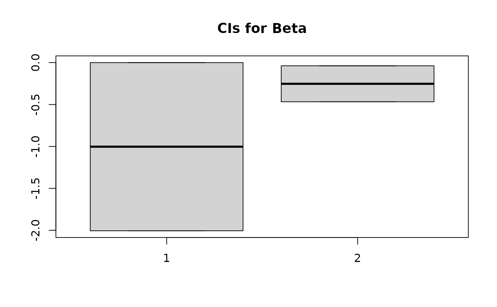

A Simple Simulation
simulated_data.rmdUsing ZINB.GP’s ZINB_NNGP model
First, we import our package as well as some dependencies we will use to simulate the dataset.
Generating a dataset
We go through the full process to generate the dataset in an attempt to provide clarity on what the various matrix parameters passed into ZINB_NNGP are.
Helper functions
First we will define a few helper functions. The first will create Vs and Vt, the spatial and temporal design matrices. These will consit of indicator variables indicating at which point in space/time our data points are.
make_Vs_Vt <- function(num_spatial, num_temporal, avg_obs) {
n_time_points <- num_temporal # Number of temporal units
n_unit_mat <- matrix(rpois(num_spatial * n_time_points, avg_obs), nrow = num_spatial, byrow = TRUE) # sample around avg_obs observations per sampling unit (both space and time)
N <- sum(n_unit_mat) # Total number of observations
id <- c()
for (i in seq_len(nrow(n_unit_mat))) {
id <- c(id, rep(i, sum(n_unit_mat[i, ])))
}
tp_seq <- c()
for (j in seq_len(ncol(n_unit_mat))) {
tp_seq <- c(tp_seq, rep(j, sum(n_unit_mat[, j])))
}
# spatial design matrix
Vs <- as.matrix(sparseMatrix(i = 1:N, j = id, x = rep(1, N)))
# temporal design matrix
Vt <- as.matrix(sparseMatrix(i = 1:N, j = tp_seq, x = rep(1, N)))
return(list(Vs = Vs, Vt = Vt, N = N))
}Next, we will make some functions to generate the spatial and temporal random effects (varying intercepts) and the corresponding distance matrices.
make_spatial_effects <- function(phi_nb, phi_bin, sigma_bin_s, sigma_nb_s, coords) {
##########################
# Spatial Random Effects #
##########################
Ds <- as.matrix(dist(coords))
Ks_bin <- sigma_bin_s^2 * exp(-phi_bin * Ds)
Ks_nb <- sigma_nb_s^2 * exp(-phi_nb * Ds)
a <- t(rmvnorm(n = 1, sigma = Ks_bin))
c <- t(rmvnorm(n = 1, sigma = Ks_nb))
return(list(a = a, c = c, Ds = Ds))
}
make_temporal_effects <- function(l1t, l2t, sigma1t, sigma2t, n_time_points) {
###########################
# Temporal Random Effects #
###########################
w <- matrix(1:n_time_points, ncol = 1)
Dt <- as.matrix(dist(w))
Kt_bin <- sigma1t^2 * exp(-Dt / (l1t^2))
Kt_nb <- sigma2t^2 * exp(-Dt / (l2t^2))
b <- t(rmvnorm(n = 1, sigma = Kt_bin))
d <- t(rmvnorm(n = 1, sigma = Kt_nb))
return(list(b = b, d = d, Dt = Dt))
}Actually Generating the Data
Now we are ready to generate the dataset. First we define the number of spatial and temporal points we will be using.
num_spatial <- 30
num_temporal <- 10Then, we create the spatial and temporal design matrices.
# Get Spatial and temporal design matrices, and total number of observations
out <- make_Vs_Vt(num_spatial, num_temporal, 2)
Vs <- out$Vs
Vt <- out$Vt
N <- out$N # Total number of observationsThen, we will generate the spatial coordinates, and the main predictors of interest X.
coords <- cbind(runif(num_spatial), runif(num_spatial))
x <- rnorm(N, 0, 1)
X <- as.matrix(x) # Design matrix, can add additional covariates (e.g., race, age, gender)
X <- cbind(1, X)
p <- ncol(X)Next, we create the spatial and temporal distance matrices, and the spatial and temporal random effects.
phi_nb <- 1
phi_bin <- 2 # Spatial Kernel length scale for Gaussian processes in the logistic regression and negative binomial parts of the model
sigma_bin_s <- 1
sigma_nb_s <- 1 # Overall spatial kernel Scale for GPs
out <- make_spatial_effects(phi_nb, phi_bin, sigma_bin_s, sigma_nb_s, coords)
a <- out$a
c <- out$c # Spatial random effects
Ds <- out$Ds # Spatial Distance matrix
l1t <- 2
l2t <- 3 # Temporal Kernel length scale
sigma1t <- 0.5
sigma2t <- 0.5 # Overall temporal kernel scale for GPs
out <- make_temporal_effects(l1t, l2t, sigma1t, sigma2t, num_temporal)
b <- out$b
d <- out$d # Temporal random effects
Dt <- out$Dt # Temporal distance matrixThen we define the fixed effects (coefficients on X) for the logistic regression and the negative binomial models.
Then, we generate some spatial and temporal noise terms that will be added into the mix
sigma_eps1s <- sigma_eps2s <- 0.05
eps1s <- t(rmvnorm(n = 1, sigma = diag(sigma_eps1s^2, nrow = num_spatial)))
eps2s <- t(rmvnorm(n = 1, sigma = diag(sigma_eps2s^2, nrow = num_spatial)))
sigma_eps1t <- sigma_eps2t <- 0.05
eps1t <- t(rmvnorm(n = 1, sigma = diag(sigma_eps1t^2, nrow = num_temporal)))
eps2t <- t(rmvnorm(n = 1, sigma = diag(sigma_eps2t^2, nrow = num_temporal)))Finally, we can create our models. First we simulate whether or not you are in the at risk group with a traditional logistic regression setting:
phi1 <- Vs %*% a + Vt %*% b
eta1 <- X %*% alpha + phi1 + Vs %*% eps1s + Vt %*% eps1t
p_at_risk <- exp(eta1) / (1 + exp(eta1)) # 1-pr("structural zero")
u <- rbinom(N, 1, p_at_risk[, 1]) # at-risk indicatorThen, if you are in the at-risk group, we draw the value at that point from a negative binomial distribution, in a GLM setting with logit link.
phi3 <- Vs %*% c + Vt %*% d
eta2 <- X[u == 1, ] %*% beta + phi3[u == 1, ] + Vs[u == 1, ] %*% eps2s + Vt[u == 1, ] %*% eps2t # Linear predictor for count part
N1 <- sum(u == 1)
r <- 1 # NB dispersion
psi <- exp(eta2) / (1 + exp(eta2)) # Prob of success
mu <- r * psi / (1 - psi) # NB mean
y <- rep(0, N) # Response
y[u == 1] <- rnbinom(N1, r, mu = mu[, 1]) # If at risk, draw from NBRunning the model on the generated dataset
Now we are ready to run the model. This is done as follows:
# Run for a short time for demo purposes
output <- ZINB_NNGP(X, y, coords, Vs, Vt, Ds, Dt, M = 10, 200, 100, 1, TRUE)
predictions <- output$Y_pred
sim_alpha <- output$Alpha
sim_beta <- output$BetaThen we can investigate the output as desired, as an example, we create 90% CIs for alpha and beta, and investigate how often some samples were selected to be at risk.
Looking at 90% CIs for coefficients for the at-risk LR model:
alpha
#> [1] -0.25 0.25
aCIs <- apply(sim_alpha, 2, function(x) quantile(x, probs=c(0.05, 0.95)))
boxplot(aCIs, main = "CIs for Alpha")Looking at 90% CIs for coefficients for the NB model:
beta
#> [1] 0.50 -0.25
bCIs <- apply(sim_beta, 2, function(x) quantile(x, probs=c(0.05, 0.95)))
boxplot(bCIs, main = "CIs for Beta")
Viewing the frequency a few samples were at risk:
# Examine how often various samples are at risk
at_risk <- output$at_risk
sim_p_at_risk <- apply(at_risk, 2, mean)
sim_p_at_risk[1:20]
#> [1] 0.48 0.44 0.37 1.00 0.76 0.94 1.00 0.95 0.82 0.88 0.88 0.56 0.55 1.00 0.91
#> [16] 0.63 0.70 1.00 0.86 1.00